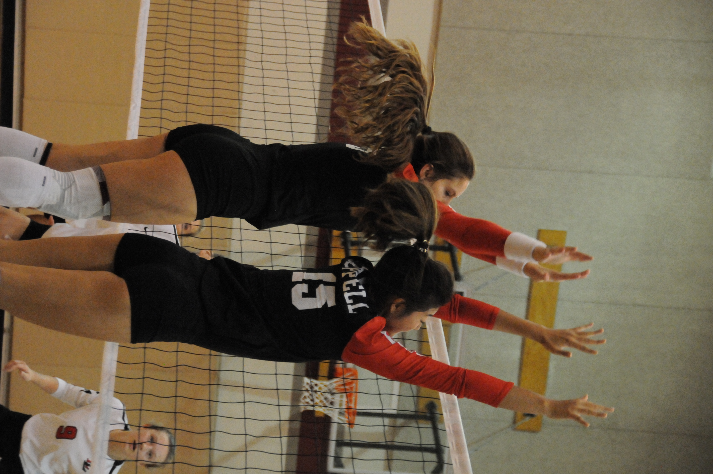
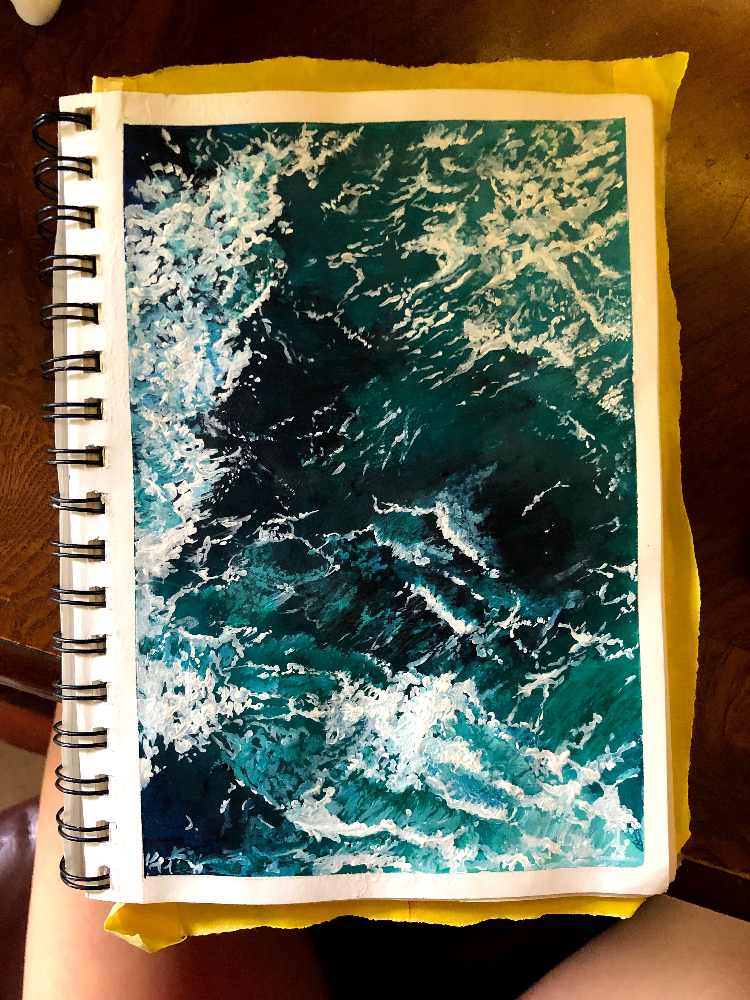
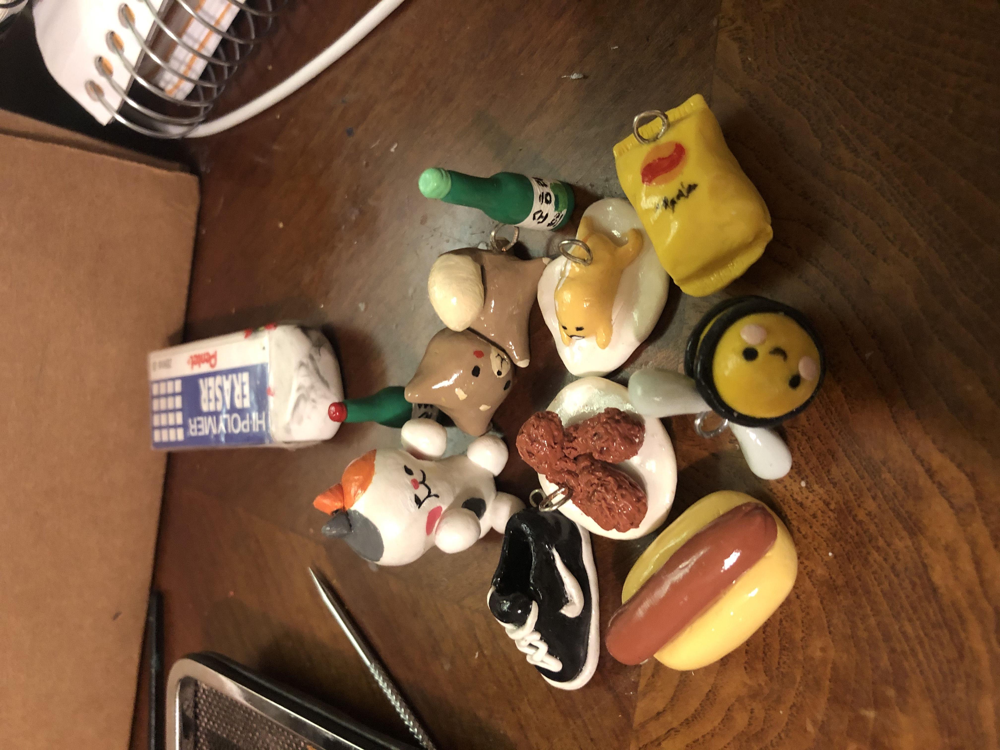
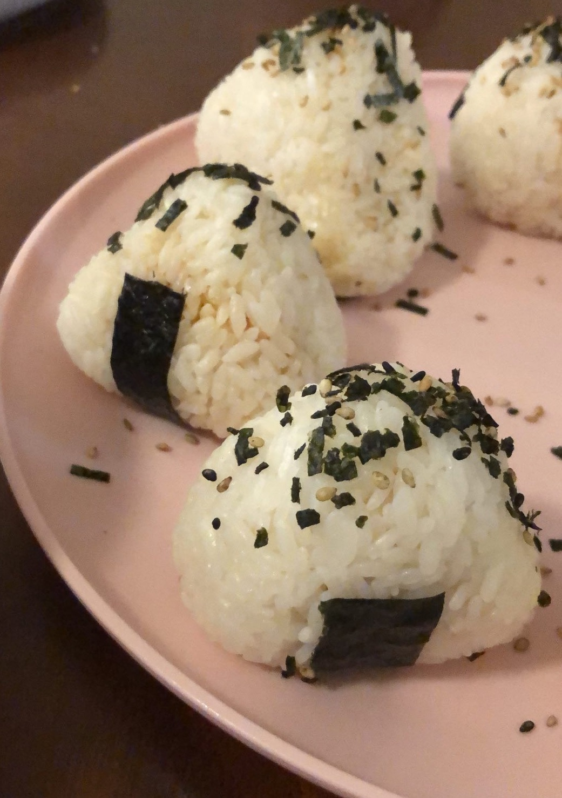
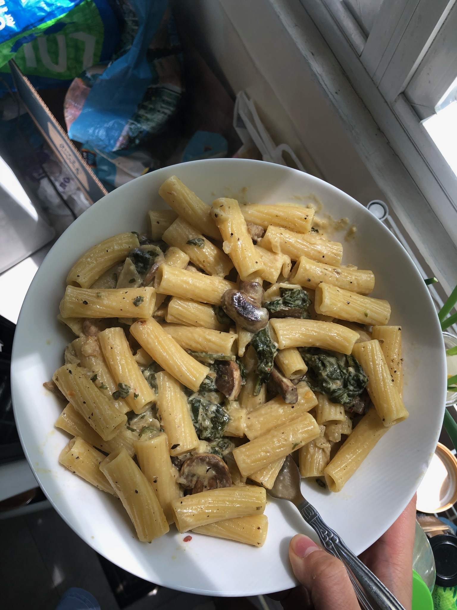

Volleyball
I have played volleyball since I was in 11. Before, I would solely play the sport to socialize with my friends and occupy my time. As I grew older, I started to use the sport as more of an escape from stressors in my life. Playing this sport for so long has taught me endless amount of lessons about leadership, mental health, mental toughness. Most importantly, it has taught me more about myself, my strengths and weaknesses, and it has forced me to grow to be the person I am today.
 
Art
Similar to volleyball, I use art as an escape. However,instead of through phsysical activity, I get to engage my creative and detail-oriented side. While I wouldn't say I'm the best at art, I believe one doesn't need to be in order to enjoy the strokes of the paintbrush or writing utensil. To me, my art is a reflection of my committment to personal projects, and it demonstrates my ability to grow on a skill without the pressure of external factors.
 
Cooking
I have a love-hate relationship with cooking. I would definitely describe myself as a foodie, but am no where near a chef. I also have no motivation to cook, and I can get impressively lazy when it comes to cooking and making recipes. However, it has always been a goal of mine to improve on my cooking. By documenting my growth as a chef, it helps me reflect on my growth, and it pushes me to continue improving.